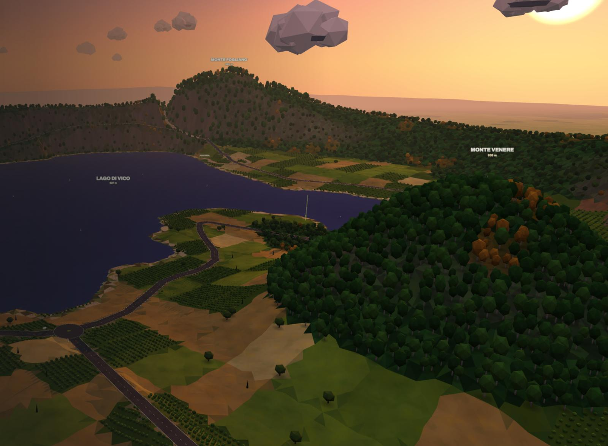
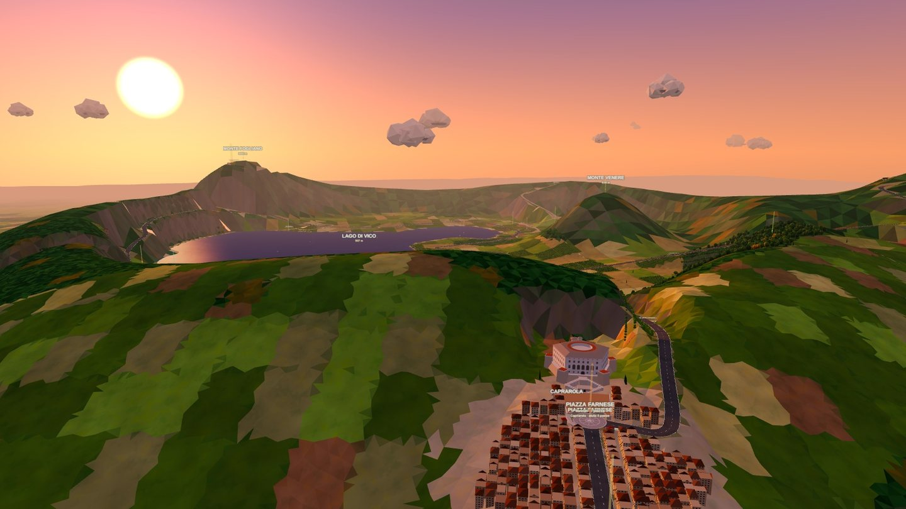
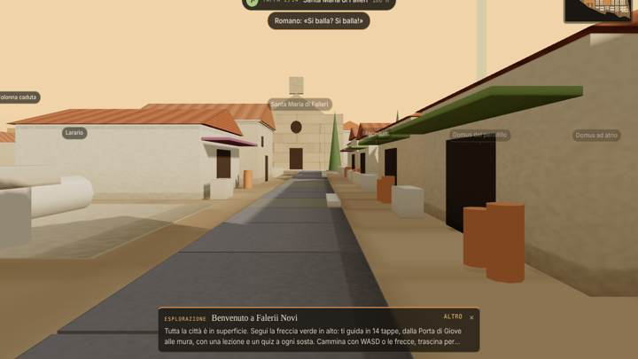
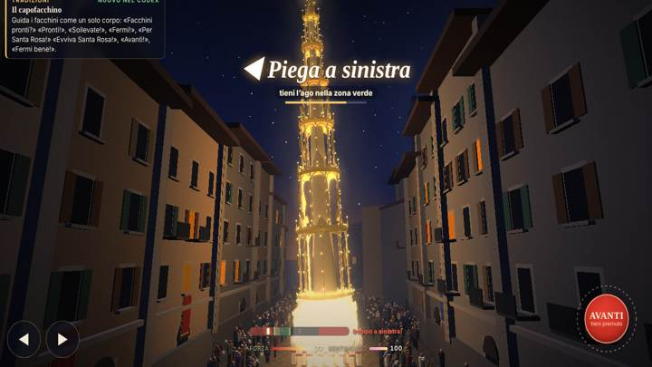
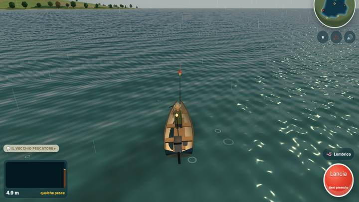

- Guardo il cielo…
Dati meteo: Open-Meteo.com (CC BY 4.0)

Giochi ambientati nei posti veri: il lago, i noccioleti, le feste dei paesi. Ogni partita ti lascia qualcosa da andare a vedere.

Il mondo aperto della Tuscia: il Lago di Vico, i noccioleti, Viterbo, Ronciglione, Carbognano, Fabrica di Roma. Da qui entri in tutti gli altri giochi.
Ognuno parte da una cosa vera del territorio. Tre modi di giocare: passeggiata, competizione, divertimento.
Sto caricando i giochi…
Tre giochi nuovi in lavorazione. Iscriviti e ti avvisiamo quando escono.
Dal vivo da Grand Tuscia Adventure: chi ha più stima tra i giocatori, e quale paese è davanti.
Nel mondo di Grand Tuscia i soldi del raccolto servono a farsi rispettare: ogni lavoro che fai per un paese ti fa guadagnare stima. Il Trono di Nocchie è la classifica della stima, e chi sta in cima è il re delle nocchie.
Entra anche tu: ti basta la mail, e i tuoi punti contano per il tuo paese.
Che tempo fa, cosa c'è da fare questa settimana e cosa dicono le stelle. Lo stesso di TV Nocchia, la televisione della Tuscia.
Dati meteo: Open-Meteo.com (CC BY 4.0)
Solo eventi e belle notizie, dai siti d'informazione della Tuscia: l'articolo si legge sul loro sito.
Tocca un paese: vedi i giochi che si svolgono lì.
Chi gioca scopre un posto e poi ci va. Mettiamo nel gioco il vostro, nel punto giusto e con il suo nome vero.
La piazza, il monumento, la festa: costruiti in low poly al posto giusto, con la scheda "Dal vero" che dice quando venire e cosa vedere. Ogni scoperta finisce nel Tuscia Codex del giocatore.
Tutti i dettagli per i Comuni →Il logo del Comune nella scheda del paese, in cambio della diffusione del gioco sui vostri canali.
La cura del paese nel gioco: monumenti e piazze rifatti, la festa con la sua settimana speciale, aggiornamenti durante l'anno.
Una settimana a tema sulla data vera della festa: luci, folla, una gara a tempo e una clip da condividere.
Una lezione in classe che parte dal gioco: i ragazzi esplorano Falerii Novi, il lago o il trasporto della Macchina, e raccolgono le schede del Codex. Poi, se si può, la gita nel posto vero.
Il metodo, il kit e una lezione d'esempio →I giochi si aprono dal browser della LIM o dai tablet, senza installare niente e senza account per i ragazzi.
Un percorso su misura per la classe: schede per l'insegnante, domande, una sfida tra classi con la classifica.
Testi brevi e controlli semplici. La modalità Passeggiata si gioca senza fretta e senza punteggi.
Agriturismo, cantina, azienda di nocciole, noleggio: la vostra sede entra nel mondo dove si trova davvero, con la sua scheda e "Come arrivarci". Il giocatore non paga mai e non vede pubblicità: vi trova lungo la strada.
Tutti i dettagli per gli sponsor →Il vostro luogo nel mondo, la scheda nel Codex, "Come arrivarci", il link e il punto sulla mappa.
Tutta la Presenza, più una battuta di Radio Nocchia nel suo stile e una missione che passa da voi.
Una settimana speciale attorno al vostro luogo, su una data vera: caccia a tempo, premio e clip per i social.
Già nel mondo: il Consorzio delle nocciole a Fabrica di Roma, con il suo piazzale, i silos e la bottega dove si comprano le scorte.
Le condizioni le concordiamo insieme, caso per caso: scriveteci.
Numeri inventati per mostrare il formato. Le statistiche sono anonime: niente dati personali dei giocatori.

Un metodo in quattro tempi per la storia, la natura e le tradizioni della Tuscia. Il gioco fa venire le domande, la lezione dà le risposte, l'uscita le fa ricordare.
Ogni lezione segue gli stessi quattro tempi, qualunque sia il gioco. L'insegnante guida, il gioco mostra, i ragazzi lavorano in piccoli gruppi.
L'insegnante racconta la storia in cinque minuti e scrive alla lavagna le domande della classe. Si gioca solo quando c'è qualcosa da scoprire.
A gruppi di 2 o 3, con tre ruoli che girano ogni dieci minuti: chi muove, chi legge le lezioni ad alta voce, chi compila la scheda.
Scheda per gli studenti, domande a crocetta, una domanda aperta. Si valuta quello che si è capito: il punteggio del gioco non entra nel voto.
La classe ritrova dal vero quello che ha visto sullo schermo e riprende le domande del primo giorno. Facoltativa, ma è il momento che si ricorda.
Classe 5ª primaria o 1ª media, due ore. Falerii Novi è una città romana fondata nel 241 a.C. e oggi sepolta sotto i campi di Fabrica di Roma: nel 2020 gli archeologi l'hanno mappata tutta col georadar, senza scavare.
Il racconto.Roma distrugge Falerii Veteres, sulla rupe di Civita Castellana, e sposta i Falisci in pianura. Perché?
L'esplorazione guidata.Una freccia porta in 14 tappe, dalla Porta di Giove alle mura: foro, terme, teatro, domus, botteghe. A ogni tappa una lezione e un quiz.
Il lavoro dell'archeologo.La città torna sepolta: i ragazzi passano il georadar e vedono comparire muri e strade.
La verifica.Le parole dell'archeologo, la linea del tempo, il confronto tra la città romana e il proprio paese.
Per ogni gioco un fascicolo pronto da usare, che si può modificare e stampare.
Classe, materie, durata e obiettivi. Il racconto da fare prima di giocare, le domande stimolo, lo svolgimento minuto per minuto.
Esercizi da fare durante e dopo il gioco: abbinamenti, linea del tempo, "allora e oggi", un disegno. Più le carte del Tuscia Codex da collezionare.
Domande con le soluzioni, una griglia di valutazione su quattro livelli e la guida all'uscita nel posto vero.
Lo stesso metodo vale per tutti i giochi. Ecco da dove parte ciascuno.
| Gioco | Materie | Di cosa si parla |
|---|---|---|
| La Città sotto i Campi | Storia, scienze | Una città romana, i Falisci, come lavora un archeologo |
| Sotto col Ciuffo | Storia, educazione civica | Il trasporto della Macchina di Santa Rosa a Viterbo, patrimonio UNESCO; il lavoro di squadra dei facchini |
| CiminoDH | Scienze, geografia | La faggeta del Monte Cimino, patrimonio UNESCO; il bosco e i suoi alberi |
| Funghi del Cimino | Scienze | Funghi e bosco: riconoscere, rispettare, non raccogliere quello che non si conosce |
| VicoSail | Geografia, scienze | Un lago dentro un vulcano spento, il vento e come una vela lo usa |
| VicoPesca | Scienze | I pesci del Lago di Vico e la riserva naturale |
| VicoVolo | Geografia, scienze | La caldera vista dall'alto, le correnti d'aria, leggere un paesaggio |
| Corsa dei Carrettini | Scienze, tecnologia | Gravità, pendenza e attrito, con i carrettini di legno di Fabrica di Roma |
| Corse a Vuoto | Storia, educazione civica | Il Carnevale di Ronciglione e le tradizioni dei paesi |
Nessuna iscrizione, nessuna mail, nessun dato degli alunni: la partita resta nel browser della LIM o del tablet. Il salvataggio con la mail è riservato a chi ha almeno 14 anni, come prevede la legge italiana; sotto quell'età si gioca lo stesso, solo senza salvare. Niente pubblicità, niente acquisti, niente notifiche.
Pronto oggi: il kit di Falerii Novi. Gli altri si preparano su richiesta, a partire dal programma della classe.
Su richiesta, più classi della stessa scuola o di paesi diversi giocano la modalità Competizione nella stessa settimana, con una classifica di classe sul sito. Si gareggia sul ripasso, non sul voto.
Le condizioni le concordiamo con la scuola, caso per caso.
infotusciagames@gmail.comScrivi una mail
La piazza, il monumento, la festa, nel punto giusto e con il nome vero. Chi gioca scopre il paese, apre la scheda "Dal vero" e trova quando venire e cosa vedere.
Nel mondo di Grand Tuscia i paesi sono costruiti dalle loro vie vere: le piazze, i monumenti, le case lungo le strade. Oggi ci sono già Viterbo, Ronciglione, Carbognano e Fabrica di Roma.
Chiese, rocche, torri, fontane e porte rifatti in low poly sulle foto del sopralluogo, dove si trovano davvero.
Quattro fatti, due righe di storia, quando venire, "Portami lì". Ogni scoperta finisce nel Tuscia Codex del giocatore.
Tutti i dettagli per i Comuni →Nella settimana della festa il paese cambia nel gioco: luci, folla, una gara a tempo, una clip da condividere.
Si può partire dalla più leggera e crescere. Le condizioni le concordiamo con ogni Comune.
Voi: diffondete il gioco sui canali del Comune, della biblioteca e delle scuole.
Voi: le foto, un referente, l'approvazione dei testi.
Voi: le date, il programma, due foto della festa.
Nel Trono di Nocchie ogni giocatore gioca anche per il suo paese: le nocciole raccolte e i lavori fatti nel mondo diventano punti per il paese. È un modo semplice per coinvolgere i ragazzi e chi è andato a vivere lontano.
Vedi la classificaIl Comune può portare il metodo didattico nelle scuole del territorio: una lezione in classe con il gioco, poi l'uscita nel posto vero, magari proprio nel vostro paese.
Il metodo per le scuoleNumeri inventati per mostrare il formato. Le statistiche sono anonime: niente dati personali dei giocatori.
Scriveteci: rispondiamo con una proposta su misura.
infotusciagames@gmail.comScrivi una mail
Agriturismi, cantine, aziende di nocciole, ristoranti, noleggi di barche e bici: la vostra sede entra nel mondo dove si trova davvero. Il giocatore non paga mai e non vede pubblicità: vi trova lungo la strada.
Chi gioca passa davanti al vostro luogo, si ferma, legge la scheda e trova la strada per arrivarci. Ogni passaggio si conta, in forma anonima.
Le condizioni le concordiamo con ogni attività, caso per caso.
Per chi vuole farsi trovare da chi esplora la zona.
Per chi vuole che i giocatori entrino, non solo passino.
Per una sagra, un'apertura, la vendemmia, la raccolta delle nocciole.
Già nel mondo: il Consorzio delle nocciole a Fabrica di Roma, con il suo piazzale, i silos e la bottega dove si comprano le scorte.
Solo numeri anonimi: nessun dato personale dei giocatori, mai.
A fine accordo il vostro luogo resta nel mondo, senza link e senza battuta.
Numeri inventati per mostrare il formato.
Scriveteci: vi rispondiamo con una proposta per il vostro luogo.
infotusciagames@gmail.comScrivi una mailSolo la mail: niente password. Ti mandiamo un codice di 6 cifre.
Per salvare la partita devi avere almeno 14 anni. Se sei più piccolo, gioca senza salvare: va bene lo stesso.
Hai già una partita? Scrivi la stessa mail: la ritrovi su questo telefono. Come usiamo la mail: privacy.
Ti abbiamo mandato un codice.
Non arriva? Guarda nello spam. ·
Il soprannome è quello che vedono gli altri. La mail non la vede nessuno.
La tua stima conta per il tuo comune nella sfida tra i paesi. Si può cambiare una volta ogni 30 giorni.
Ora gioca: la tua partita si salva da sola, e ogni nocciola che raccogli conta per il tuo paese.
Gioca oraQuesta è un'anteprima: qui non si può collegare al server delle partite. Sul sito vero ti iscrivi con la mail in 30 secondi.
Apri il sito